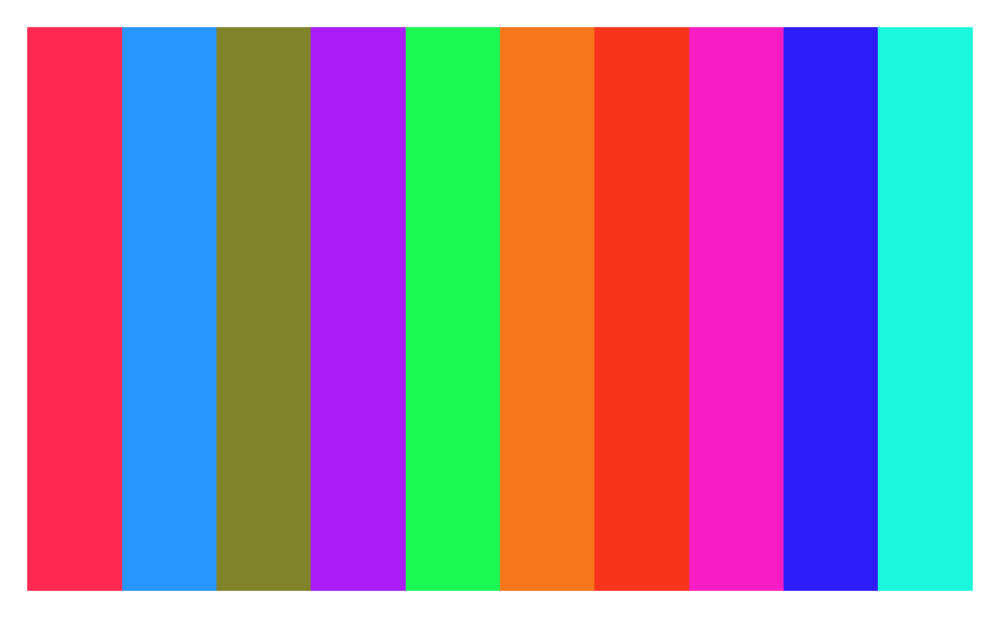
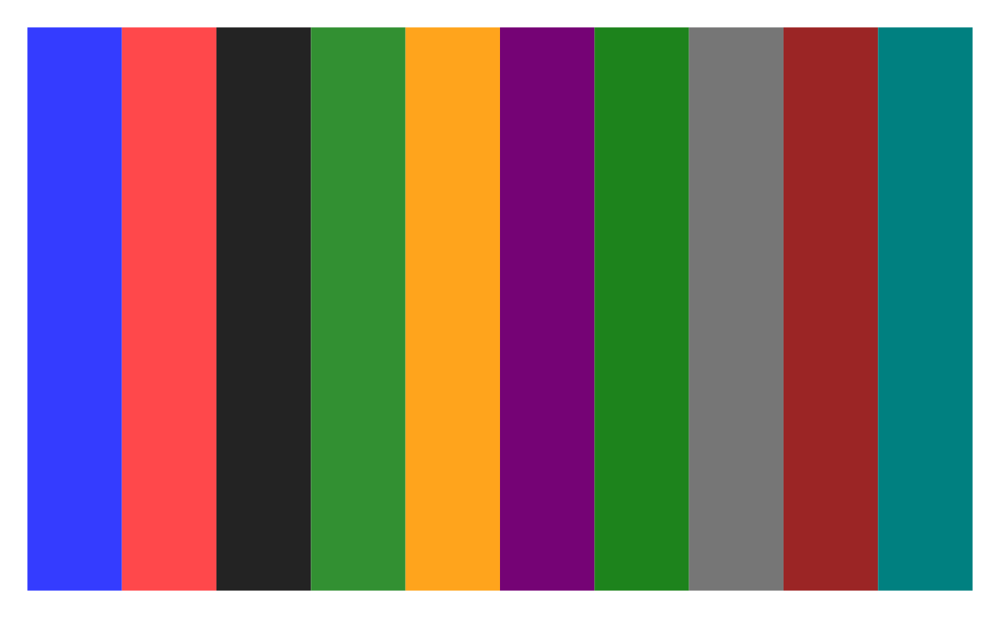
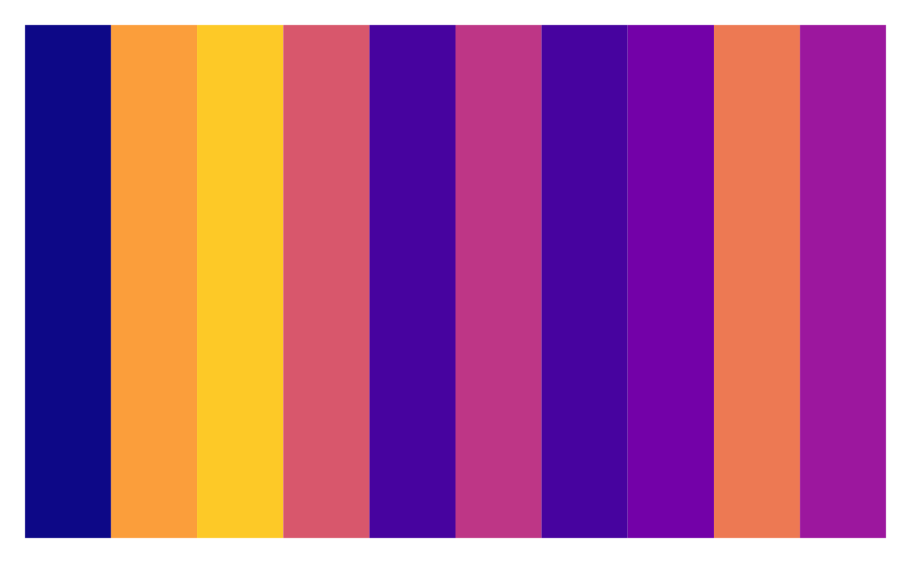
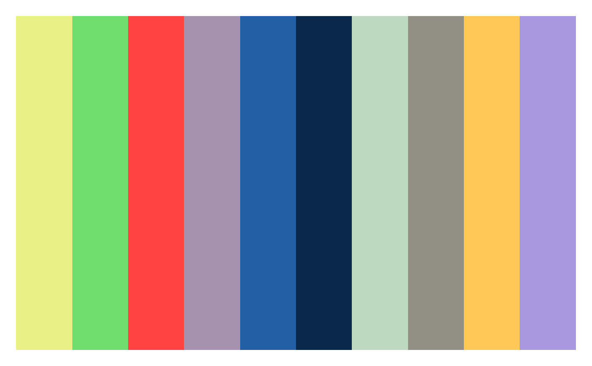

![[Stable]](figures/lifecycle-stable.svg)
A standardized color palette to be used for all plots within the NEST project.
Arguments
- n
(
numericvalue)
The number of colors to be returned from the color palettes. Please note the colors will be repeated after a certain numerical limit per palette:nest96 colorsstream38 colorsviridis49 colorsaccessible18 colors
- palette
(
charactervalue)
The name of a palette supported by this functionnestA color palette developed by the NEST team representing colors in the NEST logo.streamA color palette proposed by the stream documentation of stream version2_05viridisA color palette provided by theviridis::plasmafunction.accessibleA color palette consisting of accessible colors for those with color blindness.
Examples
library(grid)
plot_pal <- function(x) {
grid.newpage()
pushViewport(plotViewport(rep(1, 4)))
pushViewport(viewport(layout = grid.layout(1, ncol = length(x))))
for (i in seq_along(x)) {
grid.rect(
gp = gpar(fill = x[i], col = NA),
vp = viewport(layout.pos.col = i, layout.pos.row = 1)
)
}
}
plot_pal(color_palette(n = 10, palette = "nest"))

plot_pal(color_palette(n = 10, palette = "stream"))

plot_pal(color_palette(n = 10, palette = "viridis"))

plot_pal(color_palette(n = 10, palette = "accessible"))
